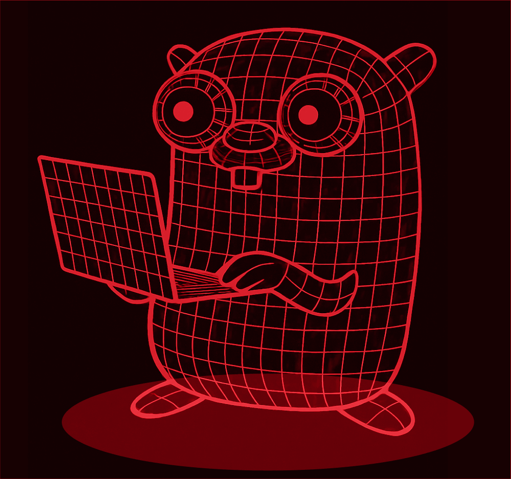
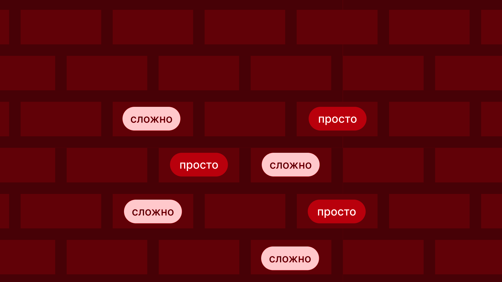

Golang da best language
Go (Golang) — это компилируемый язык программирования с открытым исходным кодом, созданный в Google для повышения продуктивности разработки масштабных программных систем. Его история началась с боли от медленной компиляции и сложности управления большими кодовыми базами.
История создания
В сентябре 2007 года инженеры Google Роб Пайк, Кен Томпсон и Роберт Гризмер столкнулись с проблемой: компиляция крупных проектов на C++ занимала десятки минут, что сильно замедляло разработку. Пайк позже вспоминал: «Сборки занимали 45 минут. Это было мучительно. Когда сборки длятся так долго, у тебя появляется много времени подумать, что можно было бы сделать лучше».
Помимо времени сборки, существовали и другие вызовы современного программирования, которые существующие языки (C++, Java, Python) решали неэффективно:
- Многоядерные процессоры требовали новых подходов к параллелизму.
- Сетевые системы и огромные вычислительные кластеры нуждались в эффективной работе с сетью.
- Масштаб кода: серверные программы насчитывали десятки миллионов строк, над которыми работали тысячи программистов.
Трио инженеров решило создать язык, который бы сочетал скорость компиляции динамических языков с производительностью компилируемых, имея при этом встроенную поддержку параллелизма и сборку мусора.
Работа над языком шла с 2007 по 2009 год. Важным этапом стало внедрение слайсов (slices). Изначально в языке были «открытые массивы», но они оказались неудобными. Потребовалось больше года, чтобы разработать концепцию слайсов, которая стала одной из ключевых особенностей Go.

10 ноября 2009 года Go был выпущен как проект с открытым исходным кодом. Реакция сообщества была огромной. Уже в первый месяц 32 человека из-за пределов Google внесли свой вклад в проект.
После релиза команда продолжила вносить серьезные изменения. Одним из первых публичных предложений Роба Пайка было удаление точек с запятой в конце строк, что сделало синтаксис чище.
Обзор языка
Go — это компилируемый, статически типизированный язык с автоматическим управлением памятью (сборкой мусора), разработанный для простоты, надёжности и эффективности. Он сочетает читаемость и скорость разработки динамических языков с производительностью и безопасностью компилируемых.

Синтаксис Go намеренно минималистичен — всего 25 ключевых слов, меньше, чем в большинстве популярных языков. Точки с запятой не обязательны: компилятор вставляет их автоматически в конце строк. Форматирование унифицировано инструментом gofmt, поэтому споры о стиле кода исключены. Фигурные скобки обязательны для блоков, но не для однострочных условий. Язык избегает «синтаксического сахара», отдавая приоритет однозначности и читаемости.
Go — статически типизированный язык, но с элементами гибкости. К базовым типам относятся логический, строковый, целочисленные различных разрядностей, числа с плавающей точкой, комплексные числа, а также псевдонимы byte и rune. Составные типы включают массивы фиксированной длины, слайсы (динамические массивы), карты, структуры, указатели, функции, интерфейсы и каналы. Каждый тип имеет нулевое значение по умолчанию, поэтому неинициализированных переменных не существует. Оператор короткого объявления позволяет выводить тип переменной автоматически.
Ключевые особенности языка:
- Явная обработка ошибок
- Сборка мусора
- Быстрая компиляция
- Простой и читаемый синтаксис
Ниже предствалены области применения:
| Область | Примеры проектов | Почему Go |
|---|---|---|
| Go — язык для инфраструктуры и облачных технологий | ||
| Контейнеризация | Docker, containerd | Конкурентность, статические бинарники |
| Оркестрация | Kubernetes, Nomad | Сетевые возможности, надёжность |
| Мониторинг | Prometheus, Grafana | Производительность, низкая latency |
| Инфраструктура | Terraform, etcd, Consul | Кроссплатформенность |
| Веб-API | gRPC, Gin, Echo | Быстрые серверы |
| CLI-утилиты | kubectl, hugo, gh | Один бинарник без зависимостей |
| Облачные функции | AWS Lambda, Cloud Functions | Быстрый холодный старт |
Примеры кода
1. Hello, World
Классическая точка входа в любой язык. Программа объявляет пакет main, импортирует пакет fmt для форматированного вывода и вызывает функцию Println.
package main import "fmt" func main() { fmt.Println("Hello, World!") }
2. Переменные и константы
Go поддерживает несколько способов объявления переменных. Короткое объявление := выводит тип автоматически. Константы объявляются через const и не могут быть изменены.
package main
import "fmt"
func main() {
var name string = "Go"
var version = 1.22
language := "Golang"
const pi = 3.14159
fmt.Println(name, version, language, pi)
}3. Условия и циклы
В Go только одна конструкция цикла — for, но она покрывает все случаи: классический цикл, цикл-условие и бесконечный цикл. Условие if может содержать предварительное выражение.
package main
import "fmt"
func main() {
for i := 1; i <= 5; i++ {
if i%2 == 0 {
fmt.Println(i, "— чётное")
} else {
fmt.Println(i, "— нечётное")
}
}
}4. Функции и множественные возвращаемые значения
Go позволяет функциям возвращать несколько значений — это идиоматичный способ возврата результата вместе с ошибкой.
package main
import (
"errors"
"fmt"
)
func divide(a, b float64) (float64, error) {
if b == 0 {
return 0, errors.New("деление на ноль")
}
return a / b, nil
}
func main() {
result, err := divide(10, 2)
if err != nil {
fmt.Println("Ошибка:", err)
return
}
fmt.Println("Результат:", result)
}5. Структуры и методы
Структуры объединяют данные, а методы привязываются к типу через получателя. Композиция через встраивание заменяет наследование.
package main
import "fmt"
type Person struct {
Name string
Age int
}
func (p Person) Greet() string {
return fmt.Sprintf("Привет, меня зовут %s, мне %d лет", p.Name, p.Age)
}
func main() {
p := Person{Name: "Алиса", Age: 30}
fmt.Println(p.Greet())
}